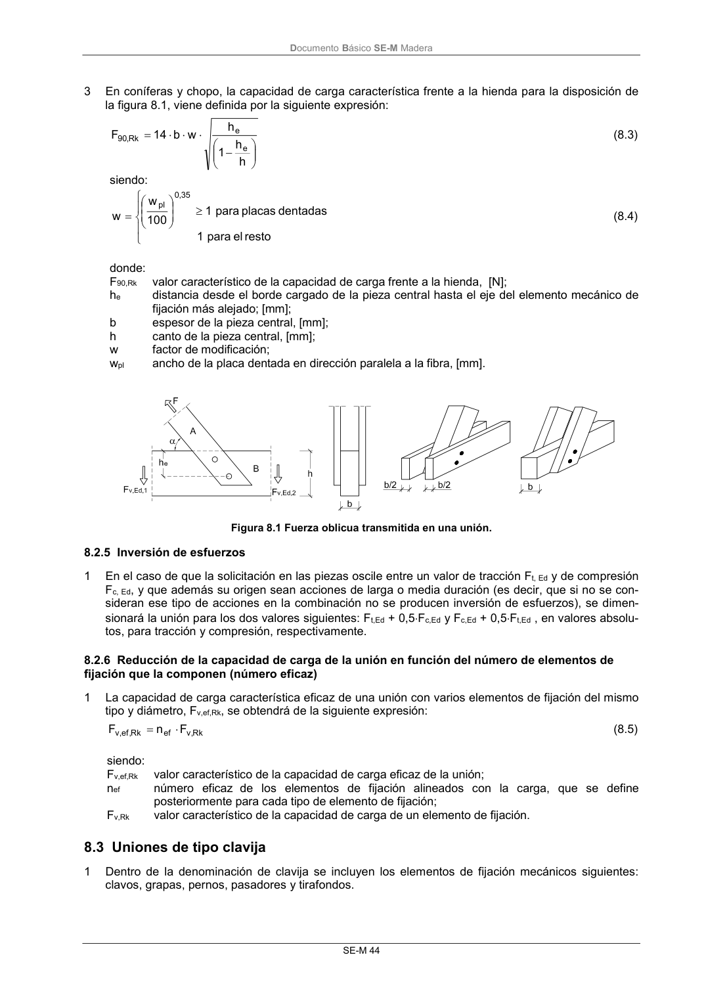

DB-SE-M Madera · edición 2019-12-20 · capa oficial
Documento DB-SE-M-oficial · SHA-256 del PDF 26b5819839ebfda78b0b119c5e76a0a37773b0d763c05688541870075df93718
Página física 50 de 132.
Copia fiel del PDF fuente · Fuente oficial
Ficha de la disposición en la fuente oficial
Formato: Texto de la página (Markdown)
Documento Básico SE-M Madera SE-M 44 3 En coníferas y chopo, la capacidad de carga característica frente a la hienda para la disposición de la figura 8.1, viene definida por la siguiente expresión: h h 1 h w b 14 F e e Rk , 90 (8.3) siendo: resto el para 1 dentadas placas para 1 100 w w 35 , 0 pl (8.4) donde: F90,Rk valor característico de la capacidad de carga frente a la hienda, [N]; he distancia desde el borde cargado de la pieza central hasta el eje del elemento mecánico de fijación más alejado; [mm]; b espesor de la pieza central, [mm]; h canto de la pieza central, [mm]; w factor de modificación; wpl ancho de la placa dentada en dirección paralela a la fibra, [mm]. Figura 8.1 Fuerza oblicua transmitida en una unión. 8.2.5 Inversión de esfuerzos 1 En el caso de que la solicitación en las piezas oscile entre un valor de tracción Ft, Ed y de compresión Fc, Ed, y que además su origen sean acciones de larga o media duración (es decir, que si no se con- sideran ese tipo de acciones en la combinación no se producen inversión de esfuerzos), se dimen- sionará la unión para los dos valores siguientes: Ft,Ed + 0,5Fc,Ed y Fc,Ed + 0,5Ft,Ed , en valores absolu- tos, para tracción y compresión, respectivamente. 8.2.6 Reducción de la capacidad de carga de la unión en función del número de elementos de fijación que la componen (número eficaz) 1 La capacidad de carga característica eficaz de una unión con varios elementos de fijación del mismo tipo y diámetro, Fv,ef,Rk, se obtendrá de la siguiente expresión: Rk , v ef Rk , ef ,v F n F (8.5) siendo: Fv,ef,Rk valor característico de la capacidad de carga eficaz de la unión; nef número eficaz de los elementos de fijación alineados con la carga, que se define posteriormente para cada tipo de elemento de fijación; Fv,Rk valor característico de la capacidad de carga de un elemento de fijación. 8.3 Uniones de tipo clavija 1 Dentro de la denominación de clavija se incluyen los elementos de fijación mecánicos siguientes: clavos, grapas, pernos, pasadores y tirafondos.
